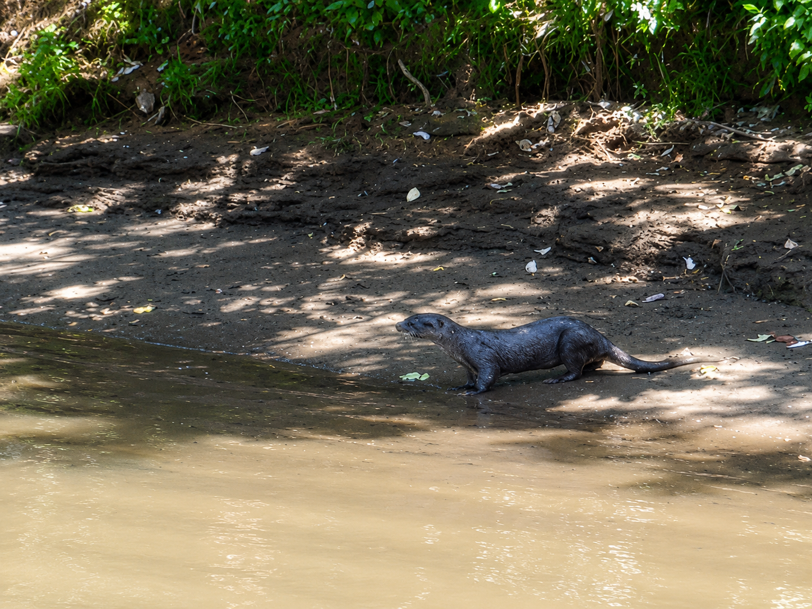
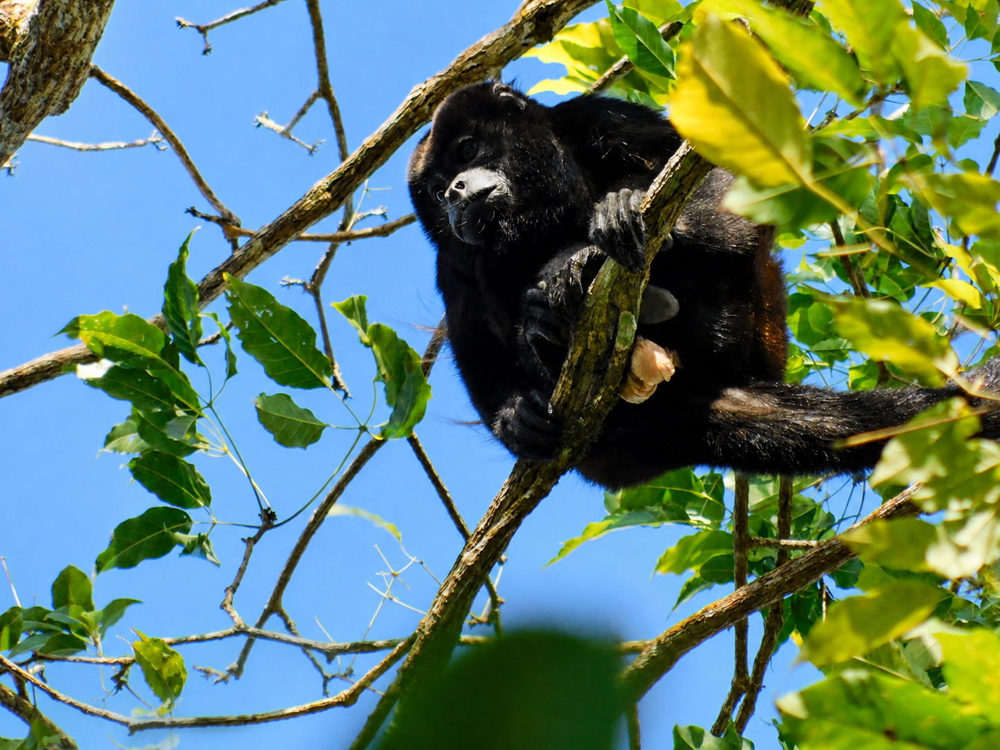
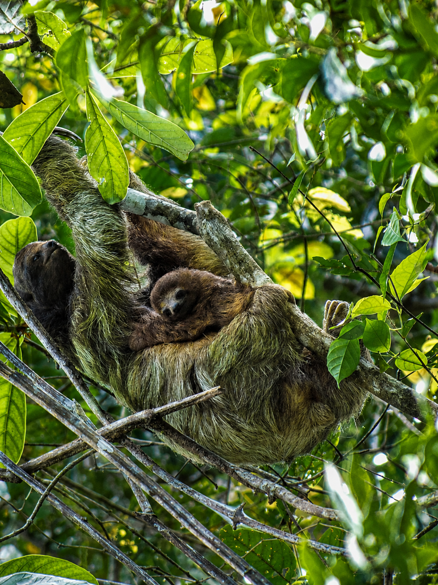
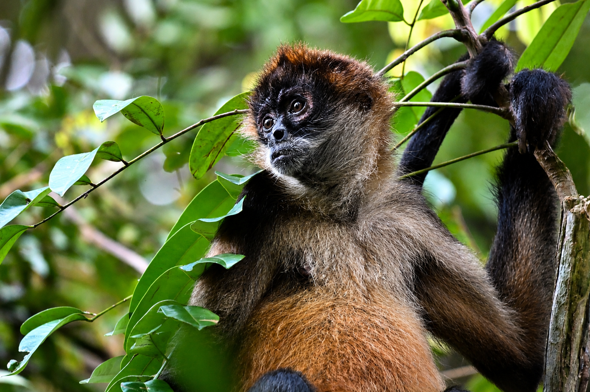
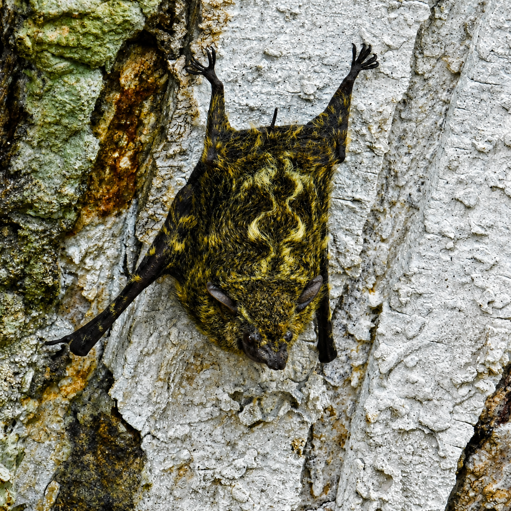

Especies esquivas
Muchos mamíferos del refugio son nocturnos o muy discretos, por lo que su presencia se detecta más por huellas y rastros que por avistamientos directos.
Entre bosques inundados, canales y zonas ribereñas, Caño Negro alberga una notable diversidad de mamíferos, desde primates ruidosos en el dosel hasta nadadores silenciosos en sus aguas tranquilas.
Caño Negro, Los Chiles, Alajuela
Cada uno de estos mamíferos refleja la salud del ecosistema de Caño Negro y la importancia de conservar sus bosques, ríos y humedales.
Muchos mamíferos del refugio son nocturnos o muy discretos, por lo que su presencia se detecta más por huellas y rastros que por avistamientos directos.
Ríos, caños y lagunas sostienen a especies semiacuáticas que dependen directamente de la calidad del agua del humedal.
Varias especies de monos habitan la copa de los árboles y se desplazan en tropas familiares durante todo el año.
Proteger el bosque y el agua del refugio es proteger a cada uno de estos mamíferos y su lugar en la cadena ecológica.

Es un mamífero semiacuático que recorre ríos y caños del refugio en busca de peces, cangrejos y otros pequeños animales.
Su presencia es un buen indicador de la calidad del agua, ya que evita zonas contaminadas o muy alteradas por la actividad humana.
Puede cerrar los orificios de la nariz y las orejas al sumergirse, lo que la convierte en una nadadora muy ágil bajo el agua.

También llamado mono aullador, vive en tropas familiares que se desplazan por el dosel del bosque alimentándose principalmente de hojas.
Es una de las especies más fáciles de detectar en el refugio gracias a su potente aullido, que marca el territorio de cada tropa.
Su aullido puede escucharse a varios kilómetros de distancia gracias a un hueso especial en la garganta que amplifica el sonido.
Es uno de los primates más inteligentes del continente. Vive en grupos organizados y se alimenta de frutas, insectos y pequeños animales.
Se le observa con frecuencia explorando ramas bajas y troncos caídos en busca de alimento cerca de los canales del refugio.
Es capaz de usar piedras y ramas como herramientas para abrir frutos y semillas, un comportamiento poco común entre los primates americanos.

Pasa la mayor parte de su vida colgado entre las ramas de los árboles, donde se alimenta de hojas con un metabolismo extremadamente lento.
Su lentitud y camuflaje lo protegen de depredadores, aunque también lo hacen difícil de detectar entre el follaje del bosque inundado.
Baja al suelo apenas una vez por semana, principalmente para hacer sus necesidades, uno de los comportamientos más estudiados de la especie.

Es el primate más ágil del refugio, reconocible por sus extremidades largas y delgadas y por su cola prensil, que utiliza casi como una quinta extremidad.
Se desplaza a gran velocidad entre las copas de los árboles más altos, saltando de rama en rama en busca de frutos maduros, su alimento principal.
Es capaz de colgarse únicamente de la cola mientras usa las cuatro extremidades para alcanzar fruta, un comportamiento que pocos primates del continente pueden igualar.

Es un murciélago pequeño e insectívoro que se distingue por su hocico alargado y puntiagudo, y por el patrón ondulado de pelo claro sobre su pelaje oscuro.
Durante el día descansa en grupos alineados sobre troncos, raíces o ramas que cuelgan directamente sobre el agua, camuflándose entre la corteza.
Suele posarse en fila junto a varios individuos más, todos mirando en la misma dirección, lo que hace que parezcan parte de la textura del propio tronco.

Es el roedor arborícola más común y visible del refugio, con un pelaje que combina tonos grises, cafés y rojizos según la subespecie.
Se alimenta principalmente de frutos, semillas y nueces, y cumple un papel clave en el bosque al dispersar semillas mientras las entierra para almacenarlas.
Suele enterrar más semillas de las que llega a recuperar, convirtiéndose sin saberlo en una de las principales sembradoras de árboles del bosque.
Descubre la riqueza de los mamíferos de Caño Negro, guardianes silenciosos de un humedal que depende de la conservación de su bosque y su agua.
Se ubica en Los Chiles, Alajuela, Costa Rica, cerca de la frontera con Nicaragua.
Puedes acceder por la Ruta 138 desde Upala o Los Chiles. Usa el botón de ubicación para ver la ruta.
Más de 300 especies de aves, además de reptiles, mamíferos y una gran diversidad de flora.
Durante la estación seca para senderismo, o época lluviosa para ver aves migratorias.
Ropa cómoda, repelente, agua, cámara y protección solar.
Cambiando idioma...